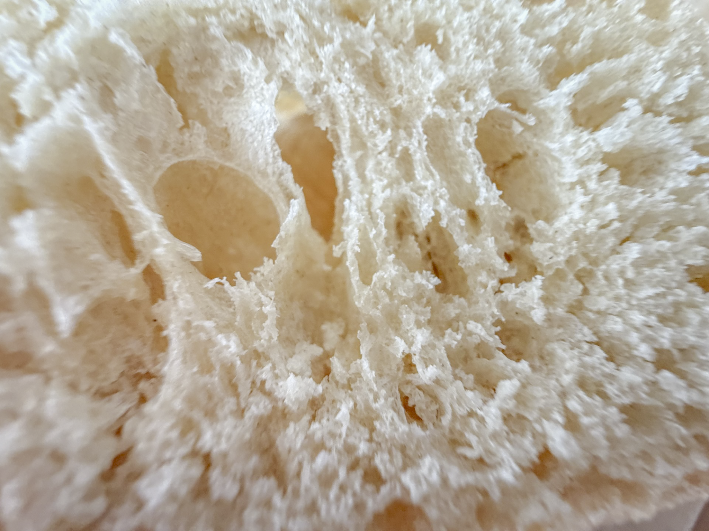
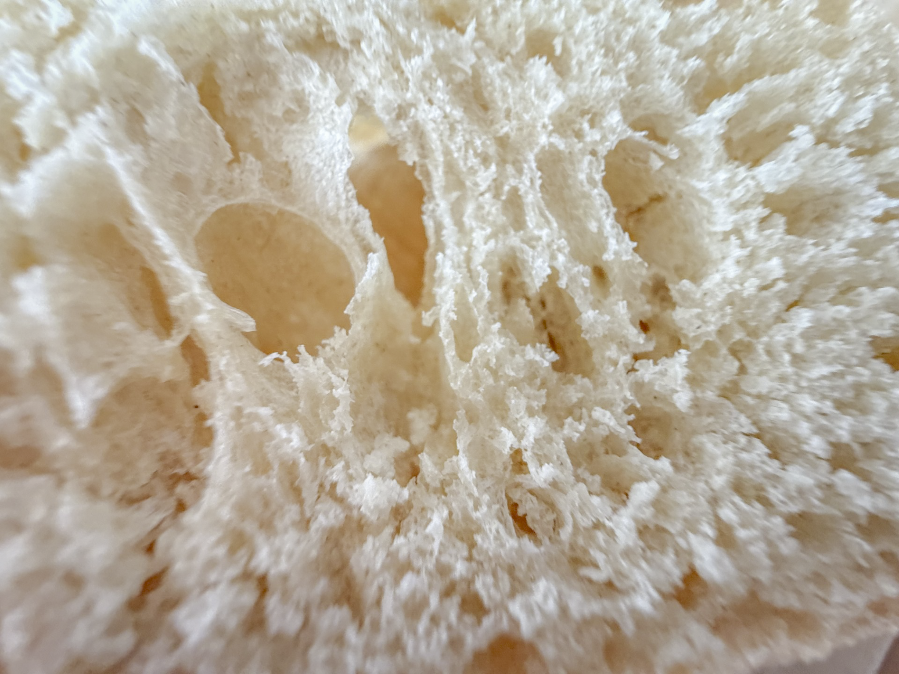

My first abstract photo, Abstract #1, tries to convey coldness while using warm colors. To acheive this, I used a peice of bread and staged it with minimal shadows. The white coloring perpetuates a sense of cold while the slight tan hue and lack of shadows maintain a warm color scheme.